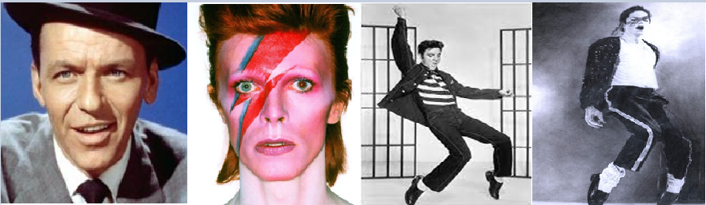
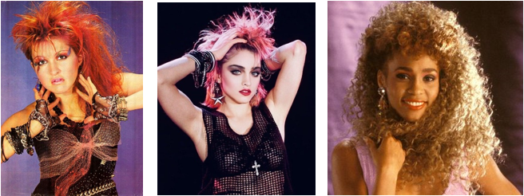

The 80's
The technology revolution was hitting drastically. IBM and Apple were in a continuous race fighting for the best computer. But who really transformed the music in this decade were Philips and Sony; they introduced the CD! Music was easier to listen, was way more consumed. Actually the most sold album of all times comes from this decade: Jackson's 1982 album Thriller became—and currently remains—the best-selling album of all time! More than 70 million copies worldwide.
MTV was launched and music videos began to have larger effect on the record industry. Now it was just not the song, but also the show around it. Therefore, it is not surprising that artists became more extravagant. The exorbitant, exaggerated, excessive, the better. Flashy, flamboyant, fantastic was the aim. You can see a change in the looks from the previous years.
From I got you under my skin of Frank Sinatra we go to David Bowie’s painted face, from the Cowboy Elvis to the leather jacket Michael!
Girls were not left behind. Madonna and Cindy Lauper were seen as icons in this decade. Not just males lead the billboard chart; either They just want to have fun or maybe just wanna dance with somebody, but women started to be more and more present in music industry.
All these changes are reflected in the genres; rock slowly leaves its podium to pop over the 50 years but it is in this decade where the big transition is done under the name of New Wave (link to Wikipedia). The more used of electronic sounds and the visual style feature in music videos separated this new genre from rock and went slightly creating the boundaries for Pop. This is why the genres with the highest centrality in our graph correspond to those that combine new wave, rock and pop. Also, in the last years of the decade we can go devising a new genre that is going to be really important in the next years: Hip Hop!
(Add a graphhhhh!!!
Lexically speaking, the variety of vocabulary is way less than in the previous decade. It is probably because they are more focused on the looks than in the talk.
The study of the adverbs in this decade reflects the continuous changes that are happening; faster, plenty, quickly, eternally loud… are words that certainly describe these years.
Will this decade of fantasy and Purple Rain continue? Will Pop finally beat rock or will new wave Beat it? Come and sing along…